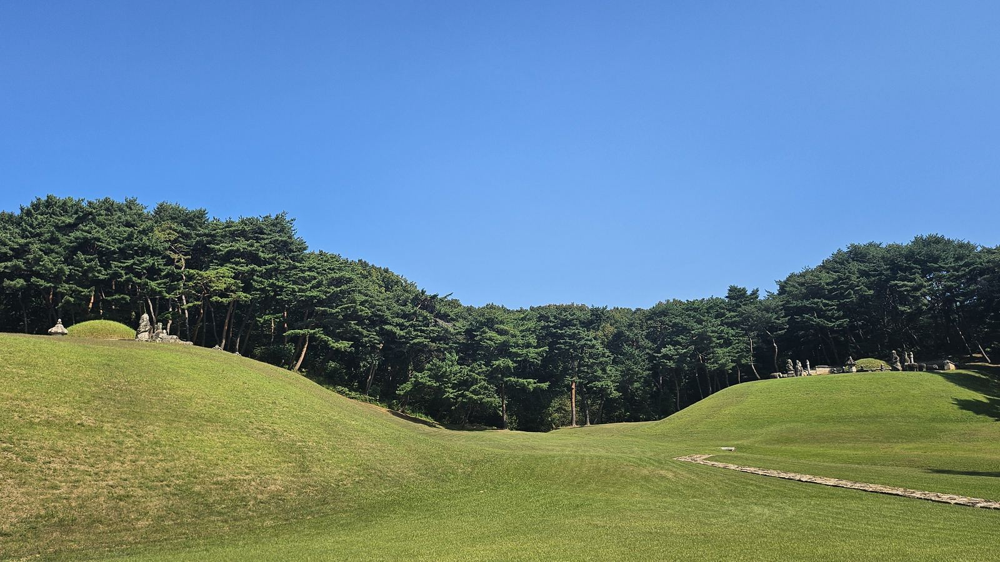
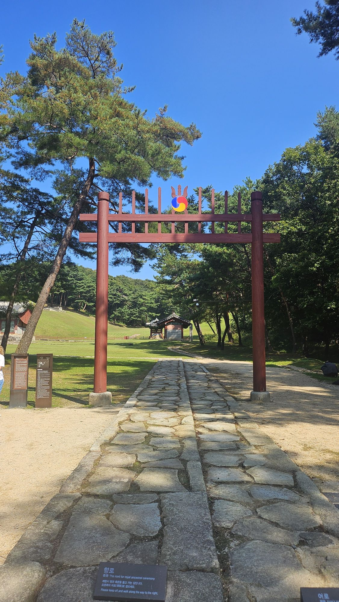
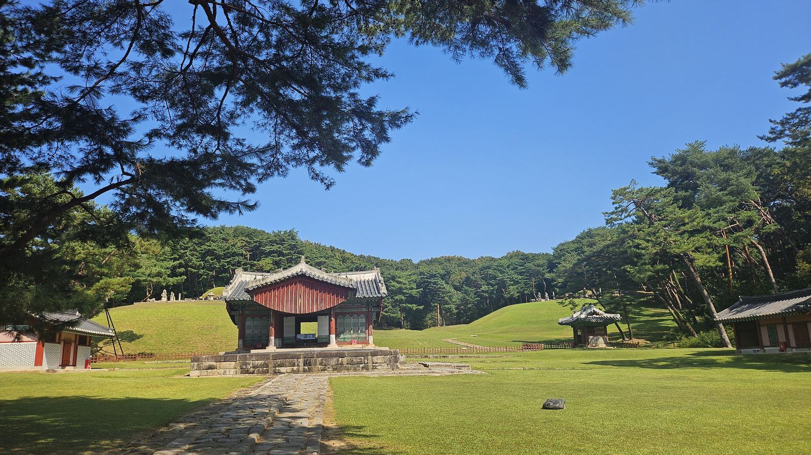
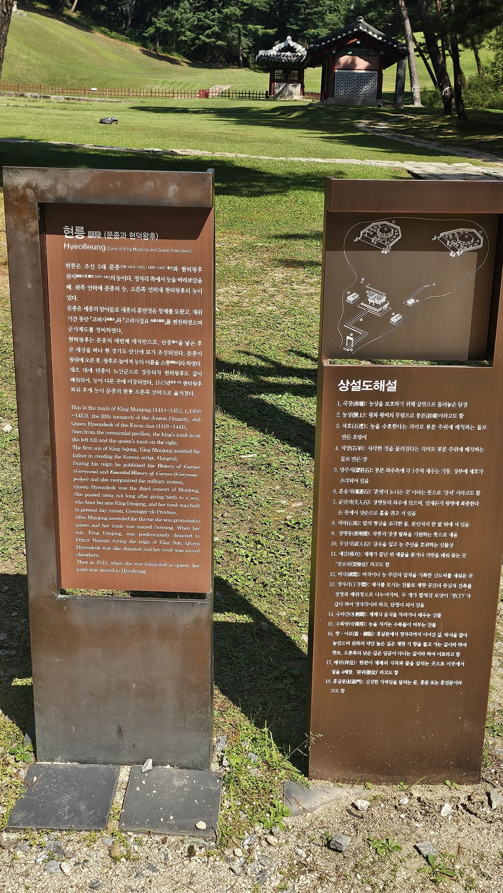
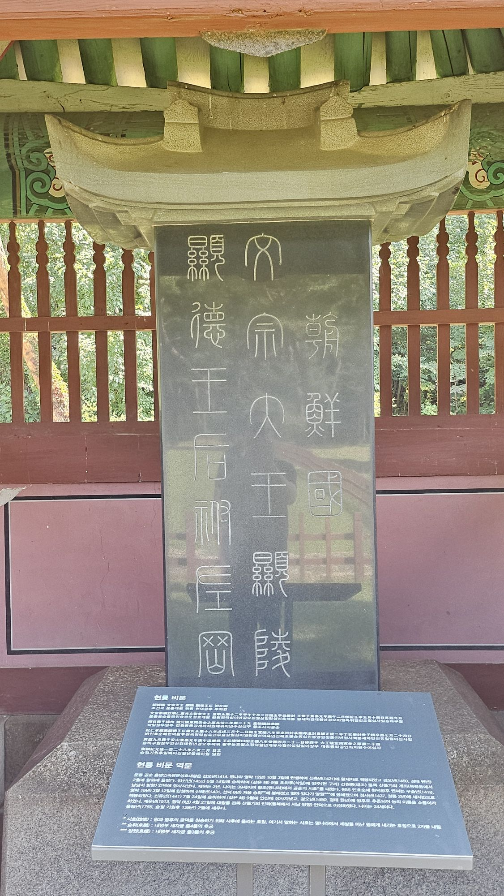
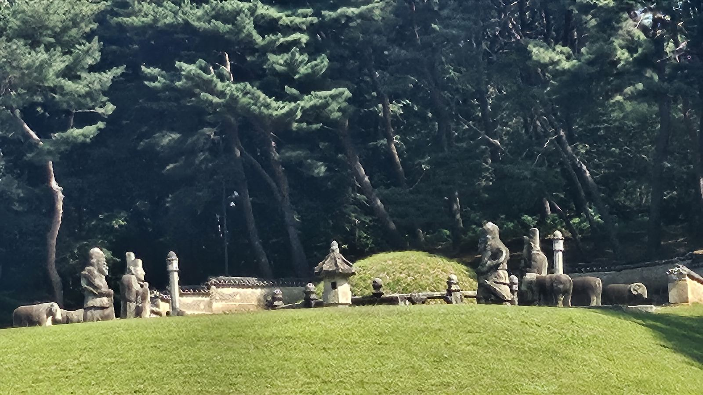

현릉(顯陵) — 문종과 현덕왕후, 두 개의 언덕에 나뉘어 잠들다

구리 동구릉, 건원릉에서 태조를 만나고 돌아선 바로 그 능역 안에 문종과 그의 왕비가 있었다. 29년 동안 세자였고 2년 동안 왕이었던 사람, 그리고 왕비 없이 왕이 된 사람의 자리다.

건원릉에서 이미 본 풍경이지만, 홍살문 안쪽의 길은 능마다 조금씩 다르다. 가운데로 솟은 돌길이 향로, 그보다 한 단 낮은 오른쪽 길이 어로다. 혼령이 향과 축문을 들고 가는 길과 임금이 걷는 길을 나눠 놓은 것이다. 안내판은 짧게 썼다. “오른쪽의 어로로 걸으세요.” 그 말대로 걸었다.
건원릉은 능 하나, 봉분 하나였다. 참도를 따라 걸으며 정자각 너머로 언덕이 하나가 아니라 둘인 것을 보고서야, 이곳이 다르다는 걸 알았다.

이런 형식을 동원이강릉(同原異岡陵)이라 부른다. 같은 능역(同原) 안에 있지만, 서로 다른 언덕(異岡)에 각자의 봉분을 쓴 것이다. 정자각과 제향 공간은 하나를 같이 쓰고, 잠든 자리만 나뉘어 있다.
왜 이렇게 지었는지는 사실 뒤에 나오는 사정(현덕왕후가 한참 뒤에 이장되어 왔다는 것)과 맞물려 있다. 그 이야기는 四에서 이어진다.
| 항목 | 건원릉(태조) | 현릉(문종·현덕왕후) |
|---|---|---|
| 형식 | 단릉(單陵) | 동원이강릉(同原異岡陵) |
| 봉분 | 1기 | 2기(좌: 문종 / 우: 현덕왕후) |
| 정자각 | 1동, 단독 사용 | 1동, 두 능이 공동 사용 |

현릉은 조선 5대 문종(1414~1452, 1450~1452 재위)과 현덕왕후 권씨(1418~1441)의 능이다. 정자각 쪽에서 능을 바라보았을 때, 왼쪽 언덕에 문종의 능, 오른쪽 언덕에 현덕왕후의 능이 있다. 문종은 세종의 맏아들로 세종의 훈민정음 창제를 도왔고, 재위 기간 동안 『고려사』와 『고려사절요』를 편찬하였으며 군사제도를 정비하였다. 현장 안내판 전문 중에서
안내판이 짧게 요약한 문종의 이력은 가볍지 않다. 아버지 세종이 훈민정음이라는 발명품을 만들었을 때, 그 발명품의 설명서를 함께 매만지고 다듬은 사람이 문종이다. 그리고 왕이 되기 전, 세자 신분으로 이미 역사책(『고려사』·『고려사절요』)을 완성시키고 군대의 진법과 화차 같은 무기까지 손본 사람이기도 하다. 즉위한 지 2년 만에 세상을 떠났다는 사실 때문에 이름이 잘 알려지지 않았을 뿐, 준비가 안 된 왕은 아니었다.
현릉 비문 번역문에 따르면 문종은 1414년 10월 3일에 태어나 1421년에 왕세자로 책봉되었고, 1450년 2월에 왕위에 올랐다. 책봉에서 즉위까지 29년이다. 연표로는 1442년부터 세종이 세상을 떠난 1450년까지 약 8년 동안 대리청정을 했다. 세자 시절의 활동으로 진법 편찬과 화차 개량이 전해지지만, 그 연도는 확인하지 못했다.
수업은 29년, 실습은 8년이었다. 주어진 시간은 2년이었다.

안내판이 들려준 이야기를, 비석은 날짜로 다시 확인해 준다. 현장에 놓인 국역 번역문을 따라가면 이렇다. 문종은 1452년(임신년) 5월 14일에 승하했고, 같은 해 9월 1일 양주(지금의 구리) 건원릉 동쪽 산줄기 언덕에 장사되었다. 현덕왕후는 1441년(신축년) 7월 24일에 승하해 같은 해 9월 안산에 장사되었다가, 1513년(계유년) 4월 21일 지금의 자리인 문종 능 곁 언덕으로 이장되었다. 같은 번역문에는 그가 1431년 승휘에 봉해졌다가 얼마 뒤 양원이 되었고, 1437년 세자빈으로 책봉되었다는 이력도 적혀 있다. 비석 자체는 1755년(을해년, 영조 31년)에 세워졌다고 적혀 있다 — 문종이 떠난 지 300년도 더 지난 뒤의 일이다.
안내판은 요약이고, 비석은 그 요약의 근거다. 두 기록이 같은 사실을 서로 다른 밀도로 되짚어 줄 때, 그 사실은 조금 더 믿을 만해진다.

봉분 가까이 다가가면 돌로 깎은 사람과 짐승들이 줄지어 서 있다. 홀을 쥔 문석인, 갑옷을 입은 무인석, 그 사이사이의 석양과 석호. 안내판의 상설도해설이 적어 둔 것과 눈앞의 돌들이 하나씩 맞아떨어진다.
문종에게는 세자빈이 셋이었다. 앞의 두 사람은 모두 세자빈 자리에서 폐출되었고, 세 번째가 현덕왕후 권씨였다.
| 세자빈 | 이력 | 출처 |
|---|---|---|
| 휘빈 김씨 | 1429년 폐출. 세자의 사랑을 얻으려 주술을 썼다가 발각된 것이 사유로 전해진다. | 연표 |
| 순빈 봉씨 | 1429년 책봉, 1436년 폐출. 폐출 사유는 자료마다 서술이 달라 이 글에서는 단정하지 않는다. | 연표 |
| 현덕왕후 권씨 | 1431년 승휘, 얼마 뒤 양원, 1437년 세자빈 책봉. 1441년 7월 24일 승하. | 현장 |
1437년 세자빈이 된 권씨는 1441년에 아들을 낳았다. 그 아들이 훗날의 단종이다.
현덕빈은 아이를 낳은 지 얼마 지나지 않아 세상을 떠났다. 안내판의 표현 그대로 “단종을 낳은 후 곧 세상을 떠나” 당시 경기도 안산에 묘가 조성됐다. 그러니 1450년 문종이 왕위에 올랐을 때, 그의 곁에는 이미 왕비가 없었다. 세자빈 자리는 9년 전에 비어 있었고, 그 자리를 다시 채우지 않은 채 왕이 되었다.
즉위한 왕에게 왕비가 없다 — 이것이 문종이 맞이한 첫 조건이었다.
문종은 즉위 후 세상을 떠난 세자빈을 왕후로 높이고, 능의 이름을 소릉(昭陵)이라 했다. 살아서 왕비가 되지 못한 여인을, 죽은 뒤에야 왕비로 만들어 준 것이다. 이 소릉은 지금 자리에 없었다. 안산에 그대로 있었다.
문종은 재위 2년을 넘기지 못했다. 1452년, 그가 세상을 떠났을 때 뒤를 이은 단종은 겨우 열두 살(세는 나이)이었다. 아버지는 준비된 왕이었지만, 아들은 준비될 시간이 없었다. 그리고 그 아들의 곁에도, 어머니인 현덕왕후는 이미 세상에 없었다. 외할아버지 쪽 외척도, 어머니도, 든든한 신하들의 울타리도 없이 어린 왕이 홀로 남겨진 셈이다.
안내판은 이 대목도 담담하게 적었다. “세조 대에 단종이 노산군으로 강등되자 현덕왕후도 같이 폐위되어, 능이 다른 곳에 이장되었다.” 아들이 왕의 자리에서 밀려나자, 이미 죽은 어머니의 자리까지 함께 거두어졌다는 뜻이다. 그 능이 다시 세상에 돌아오는 데는 56년이 걸렸다. 1513년에야 복위되어, 지금 우리가 보는 오른쪽 언덕에 자리를 잡았다.
현덕왕후는 죽은 뒤에 왕후가 되었고, 폐위되었고, 다시 왕후가 되었다.
능의 이름과 격도 그 순서를 그대로 따라갔다. 안내판의 표현은 ‘이장’이지만, 이름표만 바꾼 것이 아니라 능 자체가 다른 곳으로 옮겨졌다는 뜻이다.
| 시기 | 현덕왕후의 자리 | 출처 |
|---|---|---|
| 1441 | 세자빈으로 승하, 안산에 묘 조성 | 현장 |
| 1450 | 문종 즉위 후 왕후로 추숭, 능호 소릉 | 현장 |
| 1457 | 단종 강등과 함께 폐위, 능 이장 | 현장(이장) · 연표(연도) |
| 1513 | 복위, 현릉 곁 언덕으로 이장 | 현장 |
종묘의 신주도 같은 길을 걸었다는 설명이 일부 자료에 보인다(1454년 문종과 함께 봉안, 1457년 철거, 1513년 복귀). 이 연결은 이번에 원문으로 확인하지 못해서 이 글에서는 다루지 않는다.
이 흐름은 앞서 심온 묘에서 본 심온의 사사, 태종의 민씨 숙청과 이어진 선 위에 있다. 태종이 외척을 베고, 세종이 처가(심온)를 잃고, 그 아들 문종은 왕비 없이 즉위해 2년 만에 세상을 떠났다. 그리고 그 손자 단종은 외척도 어머니도 없이 홀로 남아 왕위를 잃었다. 한 대(代)씩 건너며 되풀이된 구조라고 말할 수는 있어도, 문종이 그 구조를 의식하며 살았는지는 기록으로 확인할 수 없다. 다만 그가 심온의 사사를 모를 수 없었던 세자였다는 사실, 그리고 그 자신도 왕비 없이 즉위했다는 사실만은 분명하다.
현릉은 두 개의 언덕으로 한 가지를 말해준다. 기록에 남은 문종과, 역사가 기억하는 문종이 다르다는 것. 안내판 속 문종은 훈민정음을 돕고 역사책을 편찬하고 군제를 정비한 성실한 세자였다. 그러나 그가 남긴 것은 2년의 치세와, 왕비 없이 떠난 어린 아들이었다. 오른쪽 언덕에 뒤늦게 돌아온 현덕왕후의 능은, 그 비극이 아들 단종에게서 끝나지 않고 어머니에게까지 미쳤다는 증거로 남아 있다.
문종의 이야기는 두 곳의 답사로 닫는다. 외조부 심온이 묻힌 수원의 사유지, 그리고 아내 현덕왕후가 뒤늦게 돌아와 누운 이곳 현릉이다. 둘을 잇는 연표는 이렇다.
외조부의 죽음에서 시작해 아내의 이장으로 끝나는 선이다. 외척이 다치는 일이 대를 건너 되풀이된 그 선의 한가운데에, 준비된 왕 한 사람이 2년 동안 앉아 있었다. 세종과 세조라는 두 이름 사이에 끼어 가장 덜 기억되는 왕이라는 것이, 이 글을 쓰는 사람의 평가다. 안산의 옛 소릉 터와 관련 유물은 이번 답사에서 따로 다루지 않았다.